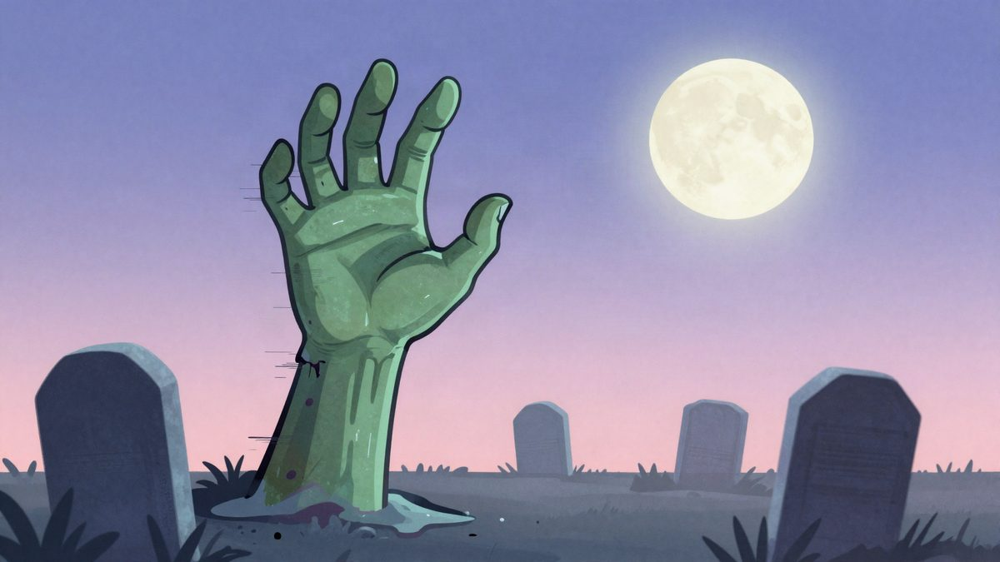
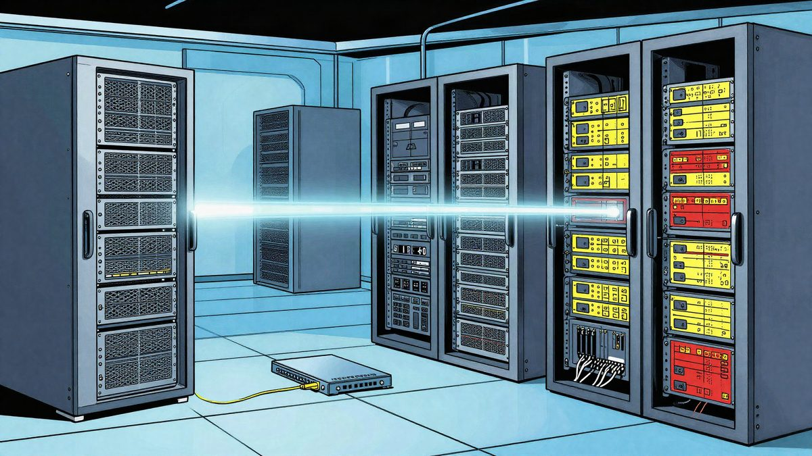

Glumci Return of the Living Dead zgroženi AI sequelom u kojem su trebali glumiti

Richard Driscoll je na Noć vještica na svojoj web stranici objavio film The Return of the Living Dead: Aftermath, koji je financiran crowdfundingom, a gotovo u cijelosti generiran AI-jem. Glumci iz originalnog filma iz 1985. javno su se distancirali od njega i tvrde da nisu snimili nijedan kadar. Beverly Randolph savjetuje donatorima da traže povrat novca preko kreditne kartice.
Richard Driscoll prikupljao je crowdfundingom novac za nastavak punk zombi klasika Return of the Living Dead iz 1985. Na Noć vještica objavio je film na svojoj web stranici. Zove se The Return of the Living Dead: Aftermath, a gotovo je u cijelosti generiran AI-jem. Glumci koji su trebali nastupiti u projektu iznenađeni su objavom i javno su se distancirali od filma.
"Ovo nije ono za što smo se prijavili", rekla je Beverly Randolph u podcastu Caffeinated Horror Dude. "Moramo nešto objaviti jer je sada puno mržnje usmjereno prema nama."
Što je bilo obećano
Driscoll vodi streaming servis DragonFLIX s minimalnim budžetom. Godine 2024. pokrenuo je Indiegogo kampanju za projekt "TRASH's REVENGE Return of the Living Dead Universe". Za razliku od mnogih fan projekata, u njemu je sudjelovao velik dio originalne glumačke postave. Randolph i Linnea Quigley bile su producentice, a najavljeni su i Michelle Bauer i Eric Roberts, nominiran za Oscara.
Prema Quigley, film je trebao biti spoj Sunset Boulevarda i Rocky Horrora. Njezin lik Trash, zadnji put viđen kao zombi nudistica, trebao je postati povučena diva u stilu Norme Desmond koja se sjeća slavnih dana proždiranja mozgova. Nakon nejasnoća i prekida komunikacije između glumaca i redatelja taj film nije nastao.
Što je objavljeno
Prema opisu Kotakua, Aftermath ima robotski izgovorene replike, nelogičan slijed događaja i nestabilne objekte u kadru. U jednom se trenutku video okrene kao da gledate snimku s mobitela koji je netko ispustio. Glumci nisu snimili nijedan kadar, ali se njihove sličnosti u filmu ipak pojavljuju.
"Ispao je fijasko", kaže Quigley. "Upozorila sam ga: što god radiš, nemoj koristiti AI, jer ljudi to ne vole, fanovi to ne vole."
Pravna pitanja
Protiv filma su se oglasili i glumci koji nisu bili vezani uz ovaj projekt. Najviše ih brine daljnje korištenje njihovih sličnosti, jer je Driscoll navodno projekt "Trash's Revenge" preusmjerio u dodatni projekt. Randolph savjetuje svima koji su financirali kampanju da zatraže povrat novca preko kreditne kartice. Poziva i Amazon, koji je 2022. kupio MGM, da poduzme pravne korake.
Za razliku od Romerova filma Night of the Living Dead iz 1968., koji je zbog administrativne pogreške dospio u public domain, Return of the Living Dead nije u javnoj domeni. Film je objavljen na Driscollovoj web stranici.
Izvor: Kotaku
Povezani članci

OpenAI-jevi agenti u testu su stvorili skriveni CPU cache kanal bez mreže i datoteka25. listopada 2026. Adrese Bijele kuće moguće je unajmiti za nekoliko dolara: Layer3 pronašao proxy izlaze na mreži Executive Office of the President5. studenoga 2026.
Adrese Bijele kuće moguće je unajmiti za nekoliko dolara: Layer3 pronašao proxy izlaze na mreži Executive Office of the President5. studenoga 2026. Asobuview: procurilo 15,8 milijuna zapisa o članovima preko dobavljača mail usluge Arala4. studenoga 2026.
Asobuview: procurilo 15,8 milijuna zapisa o članovima preko dobavljača mail usluge Arala4. studenoga 2026.